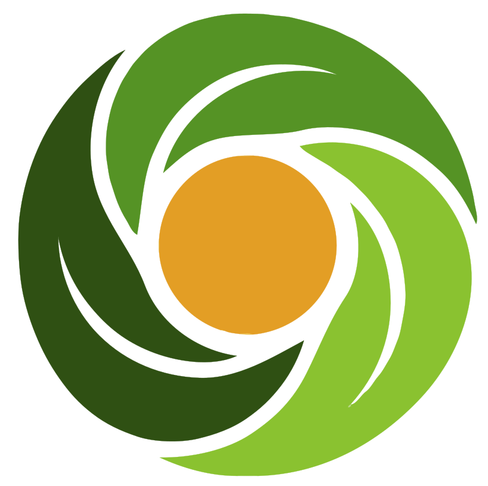
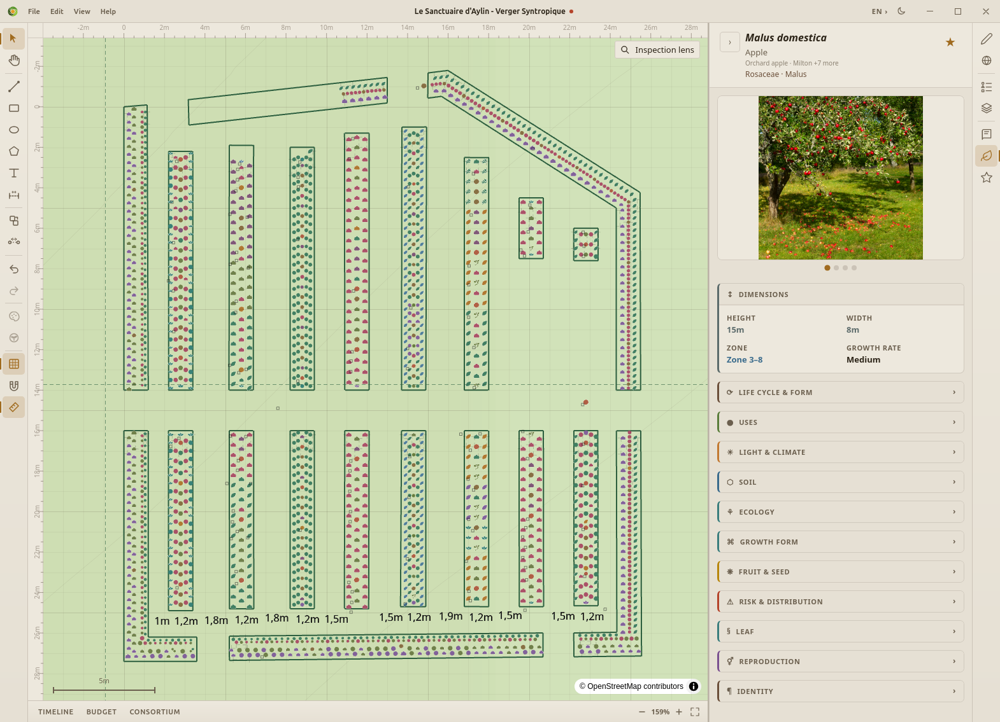

Explore your plants
Bring plant dimensions, growing conditions and ecological information into your design decisions.

CanopiAgroecological design, open to everyone
Explore plants and map your ideas with a visual design tool for the food systems your community needs.

Bring plant dimensions, growing conditions and ecological information into your design decisions.
Arrange your planting plan on a scaled canvas, with plants and annotations in one workspace.
Watch the design canvas in use.
Silent screen recording. Use the playback controls to pause or explore.
Two editions. The same canvas tools.
The larger plant catalog, on your computer.
Available for Linux, macOS and Windows.
Choose your installer on the releases page.
Open the canvas in your browser.
A smaller plant catalog, with no installation.
Discover organizations working across the wider agroecology movement.
An ecosystem directory, without implying partnership or endorsement.